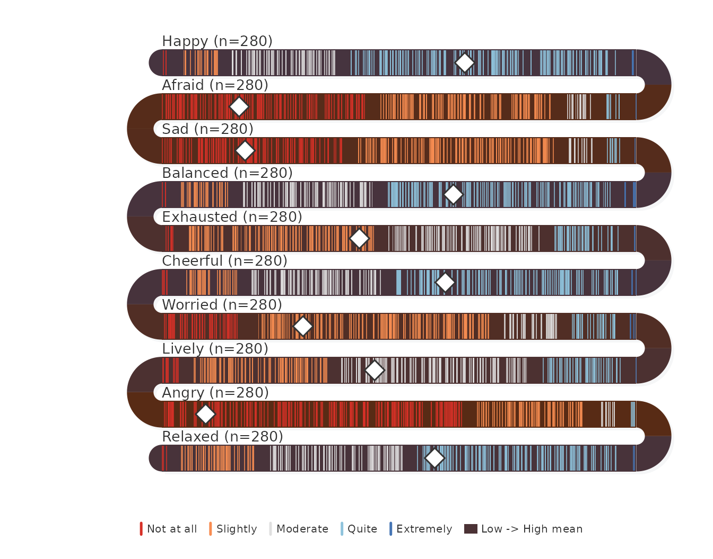
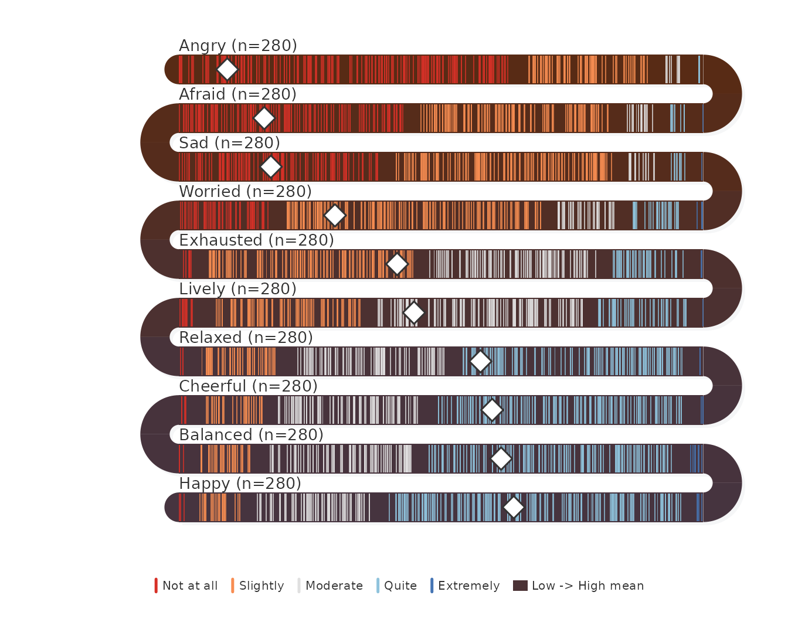
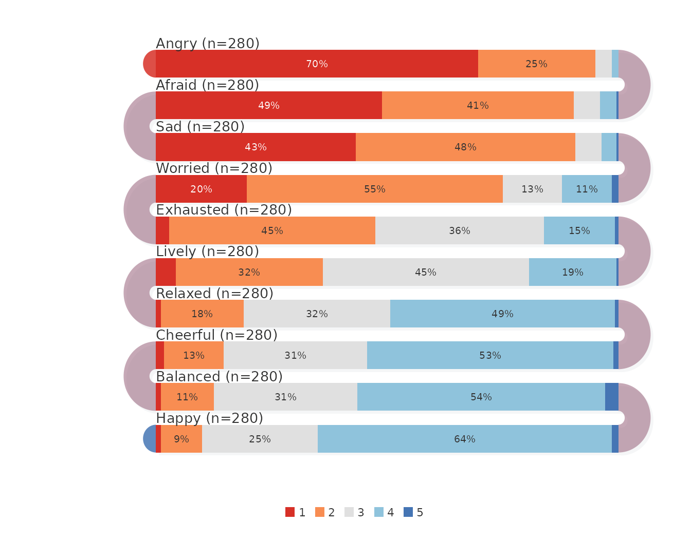
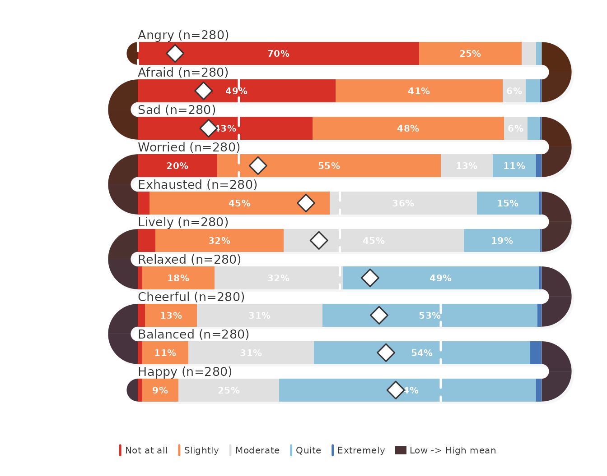
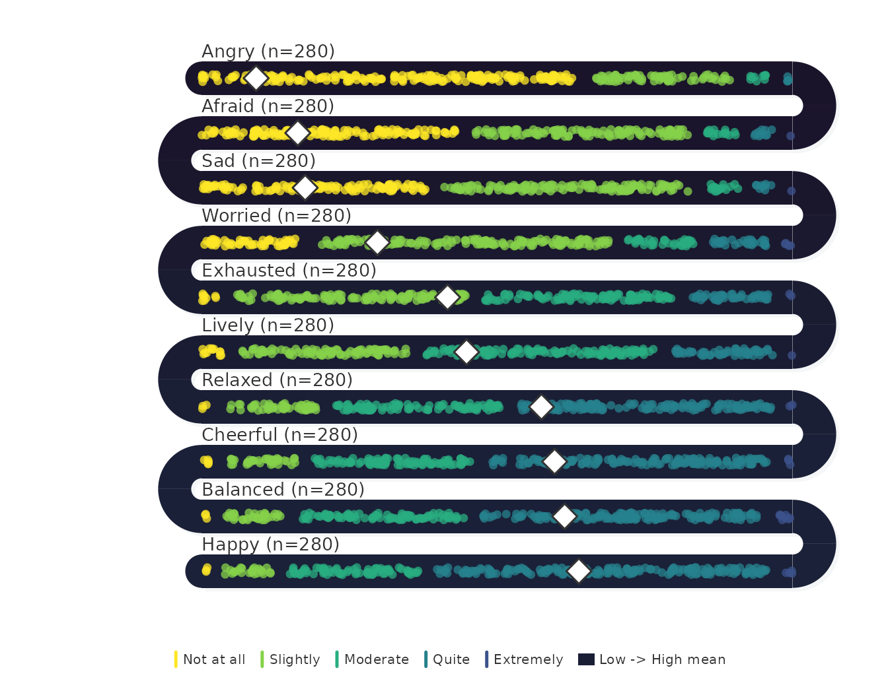
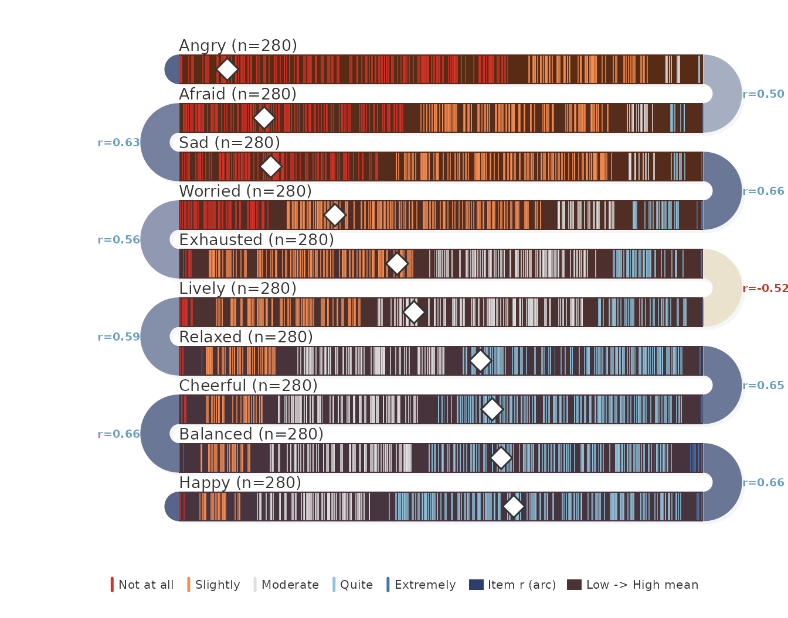
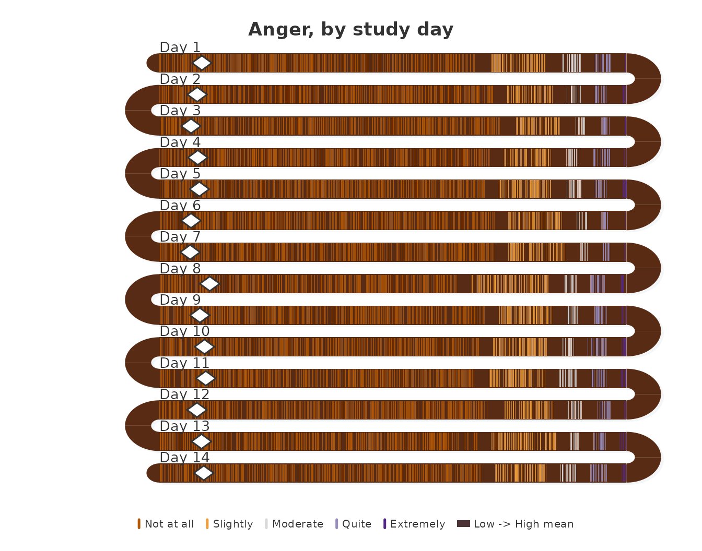
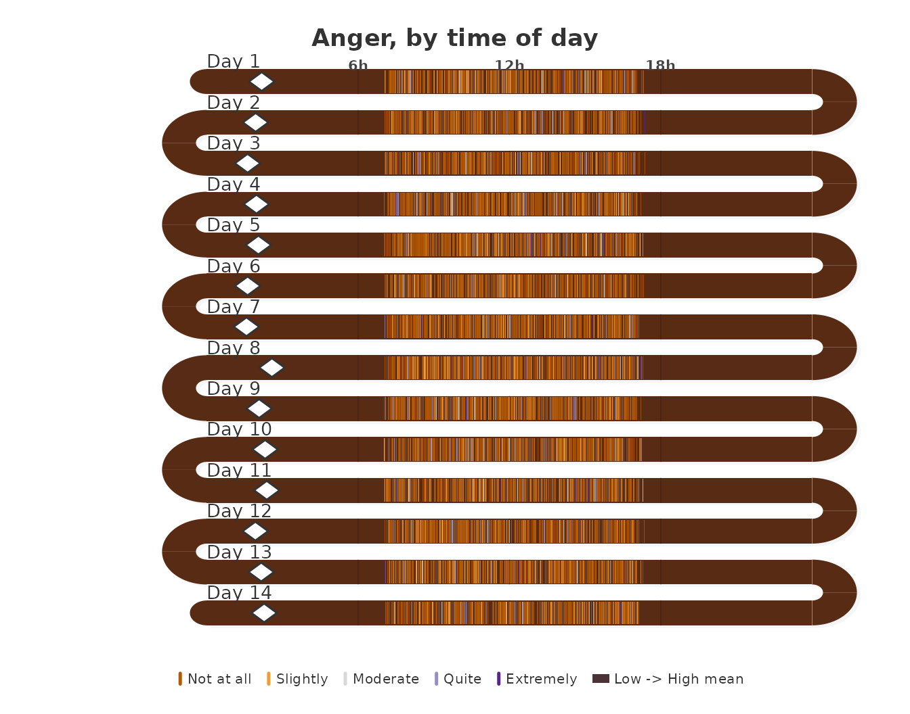
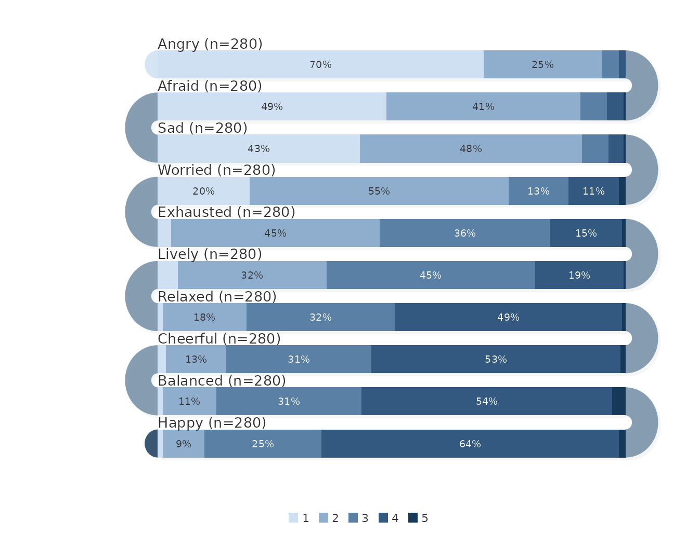

Survey and experience sampling responses
Written by Mohammed Saqr and Sonsoles López-Pernas
Source:vignettes/survey-responses.Rmd
survey-responses.RmdRating-scale items are usually summarized by a mean per item or by a stacked bar of response shares per item. Both lose information that matters when items are many: the mean hides the shape of the distribution, and a column of stacked bars soon outgrows the page. A survey snake gives each item a horizontal band, places every response in the band as a tick inside the zone of its response level, and folds the bands into a serpentine so that a long questionnaire, or a long run of study days, fits one panel. The band shading carries the item mean, so location and distribution are read together.
This vignette covers the survey displays of the package:
survey_snake() for responses as ticks, dots or bars,
survey_sequence() for response shares on a diverging scale,
and sequential_dist() for scales without a neutral
midpoint. It treats items as bands first, then days as bands for
experience sampling data.
Data
The examples use two of the bundled datasets, both from a 14-day experience sampling study of university students (Neubauer & Schmiedek, 2024). All ratings were rescaled from the original 1–7 scale to 1–5.
ema_emotions has one row per student (280 students) and
one column per emotion item. Each value is the student’s mean rating
over the 14 days, rounded to the nearest scale point.
-
Items:
Happy,Afraid,Sad,Balanced,Exhausted,Cheerful,Worried,Lively,Angry,Relaxed, each from 1 (not at all) to 5 (extremely).
ema_beeps has one row per answered prompt: 11,474 beeps
from 321 students.
-
Person:
id, an anonymized student identifier. -
Period:
day, the study day from 1 to 14. -
Time:
start_time, when the beep was answered. -
Ratings:
happyandangry, from 1 to 5.
The level labels below are used in every plot.
labs5 <- c("1" = "Not at all", "2" = "Slightly", "3" = "Moderate",
"4" = "Quite", "5" = "Extremely")Items as bands
Given a data frame of raw responses, survey_snake()
tabulates each column and draws one band per item. The width of each
colored zone in a band is the share of responses at that level, the
ticks inside it are the individual responses, and the diamond marks the
item mean.
survey_snake(ema_emotions, level_labels = labs5,
colors = snake_palette("ocean", n = 5))
The item means give the scale of what the bands encode:
sort(colMeans(ema_emotions))
#> Angry Afraid Sad Worried Exhausted Lively Relaxed Cheerful Balanced
#> 1.4 1.6 1.7 2.2 2.7 2.8 3.3 3.4 3.5
#> Happy
#> 3.6Students rated themselves low on the negative emotions and in the middle of the scale on the positive ones. Angry has the lowest mean, 1.4, and Happy the highest, 3.6; no item mean reaches 4.
Ordering the items
Input order follows the questionnaire. Ordering by
sort_by = "mean" places items of similar level next to each
other, so the snake reads as a gradient from the least to the most
endorsed item. sort_by = "net" orders by the share of
responses above the scale midpoint minus the share below, which is the
ordering used for diverging stacked bars (Heiberger & Robbins,
2014).
survey_snake(ema_emotions, sort_by = "mean", level_labels = labs5,
colors = snake_palette("ocean", n = 5))
The share of students at the two top levels shows where the ordering separates the items:
sort(colMeans(ema_emotions >= 4))
#> Angry Sad Afraid Worried Exhausted Lively Relaxed Cheerful Balanced
#> 0.014 0.036 0.039 0.121 0.161 0.193 0.493 0.543 0.564
#> Happy
#> 0.650Fewer than 5% of students rated Angry, Sad or Afraid at “Quite” or above, while more than half did so for Cheerful, Balanced and Happy. Relaxed sits on the boundary at 49%. The emotional profile of this sample is positive on average, with negative emotions reported mostly at the lowest level.
Exact shares
Ticks show individual responses but make exact shares hard to read.
tick_shape = "bar" replaces the ticks with a stacked bar
per band and prints the percentage in every segment wide enough to hold
it.
survey_snake(ema_emotions, tick_shape = "bar", sort_by = "mean",
level_labels = labs5, colors = snake_palette("ocean", n = 5))When only the shares matter, survey_sequence() draws the
same bars without the tick layer and with arcs shaded as a gradient
between the adjacent bands:
survey_sequence(ema_emotions, sort_by = "mean",
colors = snake_palette("ocean", n = 5))
Mean and median
On a skewed item the mean and the median separate.
show_median = TRUE adds a dashed line at the median next to
the mean diamond.
survey_snake(ema_emotions, tick_shape = "bar", sort_by = "mean",
show_mean = TRUE, show_median = TRUE, level_labels = labs5,
colors = snake_palette("ocean", n = 5))
The medians are whole scale points:
vapply(ema_emotions, median, numeric(1))
#> Happy Afraid Sad Balanced Exhausted Cheerful Worried Lively Angry
#> 4 2 2 4 3 4 2 3 1
#> Relaxed
#> 3Happy, Balanced and Cheerful have a median of 4 with means between 3.4 and 3.6, so for these items a minority of low ratings pulls the mean below the typical answer. Angry has a median of 1: at least half the students reported no anger at all.
Individual respondents
Dots with vertical jitter separate the respondents inside each zone,
which shows how responses cluster within a level. A dark
band_palette makes the dots stand out against the
bands.
survey_snake(ema_emotions, tick_shape = "dot", sort_by = "mean",
level_labels = labs5, colors = snake_palette("viridis", n = 5),
band_palette = c("#1a1228", "#1a2a42"))
Associations between adjacent items
With arc_fill = "correlation", each U-turn prints the
Pearson correlation between the two items it joins. The correlation is
computed across the respondents who answered both items, so it requires
raw responses with one row per respondent; a table of counts does not
record which respondent gave which answer and is refused for this
fill.
survey_snake(ema_emotions, sort_by = "mean", arc_fill = "correlation",
level_labels = labs5, colors = snake_palette("ocean", n = 5))
Arcs take arc_color for a positive correlation and its
complement for a negative one, darker as the correlation grows. The
ordering decides which pairs are shown, so the arcs answer whether items
of similar level also move together; the full correlation matrix is
cor(ema_emotions).
Days as bands
Experience sampling data have a second ordered axis: time. Passing
beep-level data with var and day gives one
band per study day for a single item, so a change in the distribution
over the study period is read band by band.
survey_snake(ema_beeps, var = "angry", day = "day", level_labels = labs5,
colors = snake_palette("sunset", n = 5),
title = "Anger, by study day")
The share of beeps at the midpoint or above, per day, is the quantity the upper zones of these bands display:
aggregate(angry ~ day, data = ema_beeps, FUN = \(x) mean(x >= 3))
#> day angry
#> 1 1 0.089
#> 2 2 0.077
#> 3 3 0.060
#> 4 4 0.079
#> 5 5 0.080
#> 6 6 0.054
#> 7 7 0.046
#> 8 8 0.083
#> 9 9 0.077
#> 10 10 0.088
#> 11 11 0.096
#> 12 12 0.076
#> 13 13 0.069
#> 14 14 0.093Between 4.6% (day 7) and 9.6% (day 11) of the beeps on each day reported moderate or stronger anger. The daily shares move within a narrow band without a trend across the two weeks, so the anger distribution is stable over the study period.
Adding timestamp positions each tick by the time of day
at which the beep was answered, instead of by response level. Each band
then spans the day from midnight to midnight, with guides at 6h, 12h and
18h, and the tick color carries the rating.
survey_snake(ema_beeps, var = "angry", day = "day",
timestamp = "start_time", level_labels = labs5,
colors = snake_palette("sunset", n = 5),
title = "Anger, by time of day")
Scales without a neutral midpoint
A diverging palette implies a neutral midpoint. Frequency scales such
as “never” to “always”, or intensity scales that start at “not at all”,
have none. sequential_dist() draws the share bars with a
single-hue ramp, so the color darkens with the level instead of changing
sign.
sequential_dist(ema_emotions, sort_by = "mean")
The emotion items are intensity ratings from “not at all”, so the sequential ramp is the more faithful encoding for these data than the diverging palettes used above.
When to use which
-
survey_snake()with ticks or dots when the distribution and the individual responses both matter, and with bars when exact shares are needed alongside the mean. -
survey_sequence()for response shares on a scale with a neutral midpoint (agree–disagree). -
sequential_dist()for response shares on a scale without one. -
arc_fill = "correlation"to annotate the U-turns with the association between adjacent items, from raw responses. -
varandday(andtimestamp) to read one item across the days of an experience sampling study. -
facet = TRUEto draw one panel per construct when column names share a prefix; the student survey case study works through this.
References
Heiberger, R. M., & Robbins, N. B. (2014). Design of diverging stacked bar charts for Likert scales and other applications. Journal of Statistical Software, 57(5), 1–32. https://doi.org/10.18637/jss.v057.i05
Neubauer, A. B., & Schmiedek, F. (2024). Approaching academic adjustment on multiple time scales. Zeitschrift für Erziehungswissenschaft, 27(1), 147–168. https://doi.org/10.1007/s11618-023-01182-8